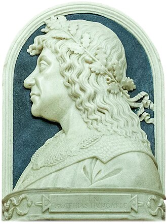
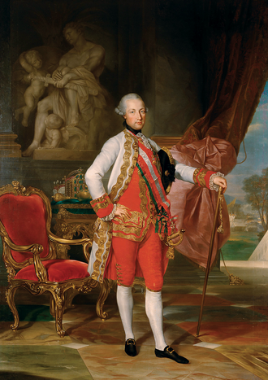
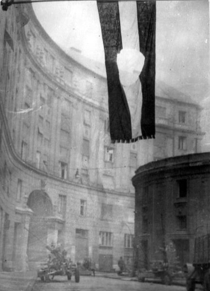

Faits marquants

Féodale bouclée par les chocs externesÉveil avec Étienne Ier (1000), cycle Árpád avec pics Ladislas Ier, Béla III, Béla IV post-mongole. Bulle d'or de 1222 = pacte avorté (pattern Magna Carta 1215). Invasion mongole 1241-1242 avorte le cycle. Pacte canonique = élection négociée de Charles Ier Robert après l'extinction Árpád (1301-1308)

Essor angevin, Mohács comme fin de l'expansion, Rákóczi comme guerre socialeEssor canonique 1308-1526 (Charles Ier Robert 1er MO, Louis Ier acmé oligarchique, Mathias Corvin pic tardif). Mohács 1526 marque la fin de l'expansion et déclenche la polarisation. Insurrections kuruc comme polarisation prolongée (Bocskai, Bethlen, Thököly). Guerre sociale avec Rákóczi (1703-1711) résolue par Szatmár — Charles VI construit le nouveau cadre central (Consilium Regium 1723, Pragmatique 1723)

Phase absolutiste endogène 1711-1848 sous cadre composite137 ans, dans la norme basse. 1er MO = Charles VI post-Szatmár. Consilium Regium Locumtenentiale (1723) comme organe exécutif central hongrois. Acmé absolutiste = Joseph II (1780-1790) — la résistance magyare porte sur l'importation culturelle allemande, pas sur l'absolutisme. Fin de l'expansion = Congrès de Vienne 1815. Remontrance = dissolution de la diète 1811. Ancien Régime 1811-1848 avec Âge des Réformes comme bloc contestataire

Double AR exogène successif — unique dans le corpusRN avortée 1848-1849 (pattern Venise/Milan), écrasement à Világos. AR exogène habsbourgeois 1849-1918 (69 ans, Bach + Ausgleich + François-Joseph), explosion par effondrement 1918. RN 1918-1947 avec Horthy comme IR régentiel, restauration avortée 1945-1947. AR exogène soviétique 1947-1989 (42 ans) avec révolution de 1956 comme réplique avortée. Glorieuse Révolution 1989-1990
Questions ouvertes
Bulle d'or 1222 comme pacte avortéPattern Magna Carta anglaise : acte écrit, négocié, collectif, mais pas de 1er MO immédiat (86 ans d'écart, rejet explicite par Charles Ier Robert en 1318). Le pacte canonique est le compromis d'élection Charles Ier Robert (1308-1310).
Rákóczi comme guerre sociale canoniqueFactions kuruc (patrimonial national protestant) vs labanc (prébendier catholique loyaliste), base territoriale, mobilisation populaire, soutien international. Résolution par Szatmár 1711 + construction du nouveau cadre central par Charles VI. Pattern de résolution proche des guerres de religion françaises résolues par Henri IV (compromis qui apaise les deux factions pour consolider l'exécutif central).
Double AR exogènePattern unique dans le corpus : AR exogène habsbourgeois 1849-1918 puis AR exogène soviétique 1947-1989. Le précédent bohème (v2) documente un seul AR exogène soviétique. La Hongrie cumule les deux, reflétant sa position géopolitique centrale entre deux puissances tutélaires successives.